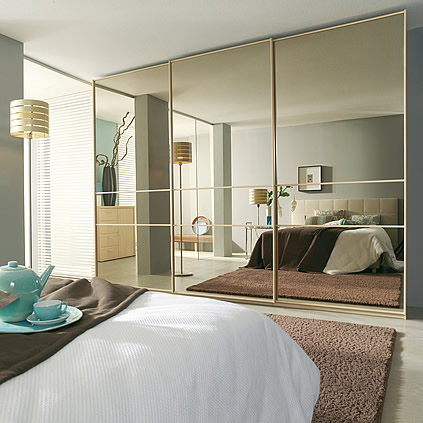

4 more photos · swipe


Aspen Wardrobes
Aspen Wardrobes - Glass Doors - Height 236cm
Stylish sliding and folding-door wardrobes with glass & mirror doors in a wide range of sizes. Wardrobe comes with 1 hanging rail and 2 shelves per section. A range of accessories is available.
- Depth
- 60-67cm
- Height
- 236/240cm
Please call for latest prices on 01173 292746
Price depends on door and size selections.
Sale Our stylish new range of wardrobes is discounted according to the amount of your total purchase: up to £500: 15%; £501 to £900: 20%; over £900: 25%.
Finishes
Available in heart beech, maple, walnut, and alpine white. Glass overlay available in cream, black, basalt or bronze mirror.
Ask about this wardrobe
Or visit the Clifton showroom, 56-60 Whiteladies Road, Bristol, BS8 2PY. Open 7 days: 10am-5pm Monday to Saturday, 12-5pm Sunday. Contact and map